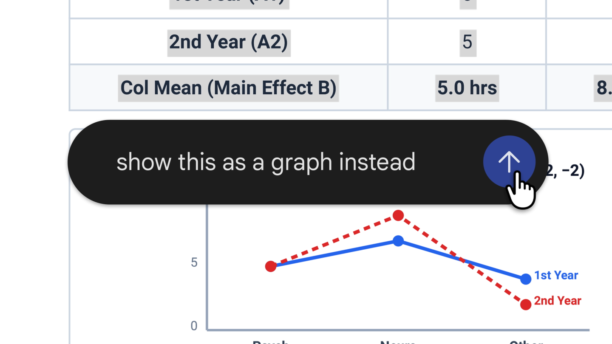
Gemini本次文件编辑功能的官方演示配图。
Gemini文件可在聊天里直接编辑
来源: Google · 2026-10-30 00:15（台北） · 原文链接
Google为Gemini应用加入文件生成、预览与直接编辑：用户可全屏手动修改，或选中文字让模型调整。PDF支持网页及移动端，Google文档、表格、幻灯片、Markdown、TXT和代码目前仅支持网页。功能面向Gemini可用地区的所有用户与支持语言开放；它提供的是聊天中的文件修订入口，不等于每种文件都能在手机上完整编辑。
Janet 锐评：
交稿前常要改的，只是一段话、一处数字或一个标题。能由人直接接手，比为这点修改重跑整份文件省事，也让最后的措辞留在作者手里。对创作者更实际的检验，是改过一轮以后，版式、引用和其他段落是否还能保持；局部编辑若足够稳，聊天产物才会更像可继续工作的文档，而非一次性演示。
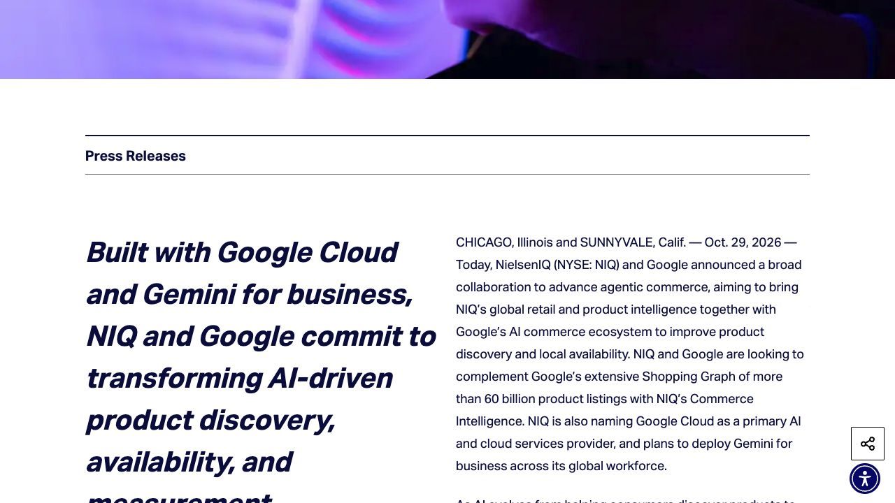
NIQ本次原始公告的存档页面截图，正文未改写。
NIQ用零售数据补充代理购物信息
来源: NIQ / Google · 2026-10-29（原文仅日期） · 原文链接
NIQ与Google宣布合作，计划结合NIQ覆盖逾2.5亿商品的信息、90国门店与销售信息，补充Google Shopping Graph的商品发现与本地可用性数据。NIQ也将扩展使用Google Cloud及Gemini for business，并把Meridian营销测量框架接入Cadence。公告描述合作方向与集成计划，未公布面向所有消费者统一上线的日期。
Janet 锐评：
推荐一件商品不难，难的是附近真有货、规格相同、最后也确实买了。把门店和成交资料接进来，有望减少购物助手的空推荐；广告主更关心的那一步，则是分清推荐之后的购买有多少来自新增需求。
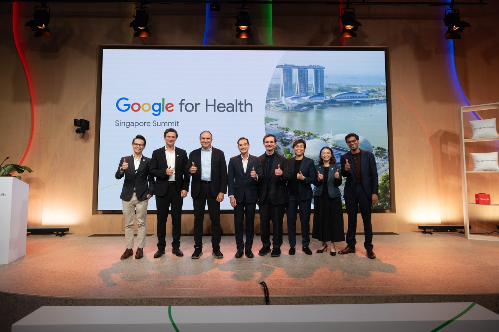
Google本次新加坡健康合作公告配图；不代表AI疗效评估结果。
Google在新加坡建研究中心与医疗合作
来源: Google · 2026-10-29 11:30（台北） · 原文链接
Google宣布在新加坡建立Research研究团队，并与当地高校和医疗机构合作。Google.org及DeepMind向Health for Human Potential联盟投入700万美元，其中100万美元用于疾病威胁检测平台PathGen；DeepMind与NUHS评估辅助临床查询工具，Google Cloud与NHG推进人群健康项目。研究、评估和项目合作处于不同阶段，不能合并写成已验证疗效。
Janet 锐评：
医生查指南、公共卫生部门发现疾病威胁、居民收到生活提醒，面对的是三类不同的信息任务。当地团队和医院一起做，至少让语言、资料位置和实际工作习惯进入设计；效果仍会分别落在这些具体任务上。
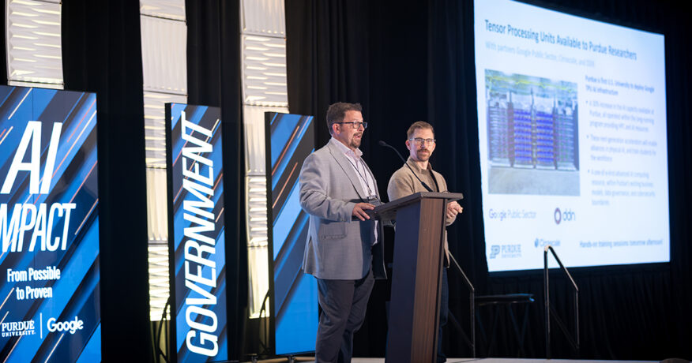
普渡大学本次TPU合作发布现场，摄影Jonathan Poole。
普渡将TPU纳入校园科研计算
来源: Purdue University · 2026-10-30 03:07（台北） · 原文链接
普渡大学与Google Public Sector、Cirrascale及DDN合作，把Google TPU纳入校园计算体系，学校称将使AI算力容量增加30%。设备将整合进扩建的数据中心，首批研究者预计2027年1月开始使用。所谓首家美国高校由校方按校园计算项目口径表述；本条是部署计划公告，尚不是所有师生当天取得可用额度。
Janet 锐评：
校园里的算力是否好用，还取决于学生能不能申请到、数据搬得进去、作业跑得完整。容量增加三成是明确投入，等到一月开放后，不同课题实际排队多久，会比“第一家”的名次更贴近研究者。
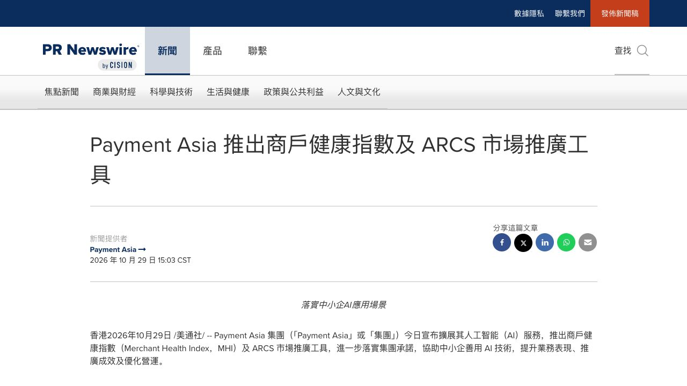
Payment Asia本次中文原始公告截图，保留标题、提供者和发布时间。
Payment Asia给商户接营销与支付
来源: Payment Asia / PR Newswire · 2026-10-29 15:03（台北） · 原文链接
Payment Asia推出商户健康指数MHI及ARCS营销平台。MHI结合商户登记、网站活动和交易等资料生成经营健康评分；ARCS生成面向香港消费者的文字和商品图片，并可接支付链接。目前正邀请部分餐饮商户试点。公告没有提供评分准确率、误判率或营销转化的独立评测，不能据此认定它已成为行业统一标准。
Janet 锐评：
小店缺的常是一套能从文案走到收款的短流程，ARCS把两端接起来的方向很具体。另一边，经营健康分数会怎样解释、商户能否纠正资料错误，同样影响这套工具是否值得长期使用。
本次模型卡附带的Artificial Analysis编程智能体指数图，评测条件见原文。
Mistral Large 4开放可下载权重
来源: Mistral · 2026-10-29 20:00（台北） · 原文链接
Mistral正式开放Large 4改进版权重，距10月6日API预览有别，本次FP8与NVFP4检查点已可下载。模型约1万亿总参数，每token激活490亿，计入嵌入及输出层为520亿，支持百万token上下文。权重使用修改自MIT的Mistral Ecosystem Open-Weight许可：经营模型即服务的主体商业使用须另取许可，内部使用等另有例外，不能简称无限制MIT。
Janet 锐评：
权重从承诺变成文件，机构终于能决定部署位置、修改方法和保留哪个版本。能接着改，是这次开放最实在的部分；把访问权再卖给别人，则还受到专门条款约束。近万亿参数也意味着自部署仍是一项集群工程，开放并不等于普通笔记本即可轻松运行。控制权增加以后，设备、维护和版本选择的工作也一起到了使用者手中。
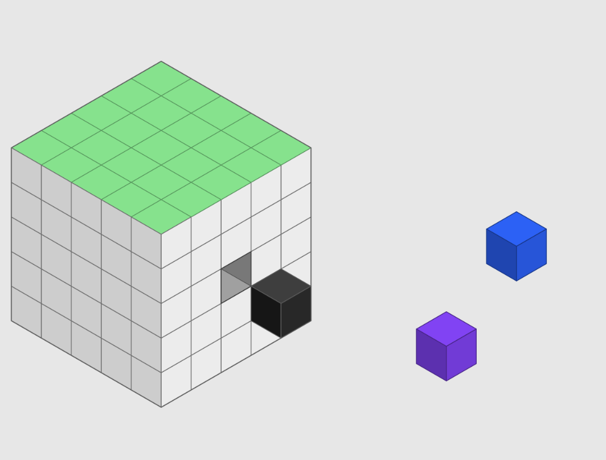
IBM Granite本次4.1.1技术说明配图。
Granite用适配器更新语音与决策
来源: IBM Granite / Hugging Face · 2026-10-29（原文仅日期） · 原文链接
IBM于29日发表Granite Switch 4.1.1技术说明，解释如何只更新语音识别模型和Decision适配器，而不重新计算基础模型。模型卡载明这次修订实际27日已发布；本条属于当天新分析，基础事件较早。更新加入多语言语音及原生标点、大小写处理，并称决策测试表现改善，后者为团队自报，不是独立复测结论。
Janet 锐评：
模型更新如果能像换一个模块，部署方就不用每次从头接受一整套变化。Granite这次把哪些部件动了、底座没动什么讲出来，有助于缩小复核范围；兼容承诺仍要落到自己调用的适配器上。
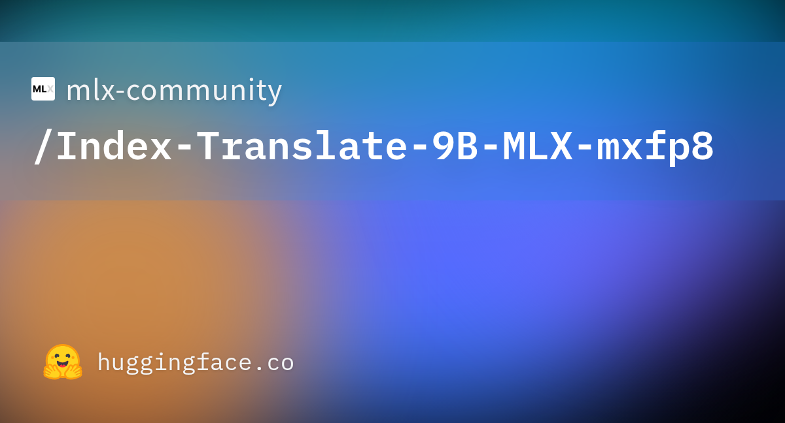
本次社区转换仓库的模型卡预览图，非翻译质量测试图。
社区将Index翻译模型转换为MLX
来源: Hugging Face · mlx-community · 2026-10-30 00:09（台北） · 原文链接
mlx-community于29日上传Index-Translate-9B的独立MLX mxfp8转换版，固定版本含两个权重分片，配置记录八位精度与32大小分组。源模型来自IndexTeam，转换使用mlx-lm 0.32.2，仓库标注Apache 2.0。它是既有翻译模型的新格式版本，并非当天新基础模型；转换卡未给出独立译文质量、速度或峰值内存评测。
Janet 锐评：
为字幕或资料翻译多保留一个本地选项很有用，尤其是不能随便上传的素材。格式和精度记录让试用有了可追溯起点，译名是否一致、语气是否合适，还得拿同一份原稿逐段对照。
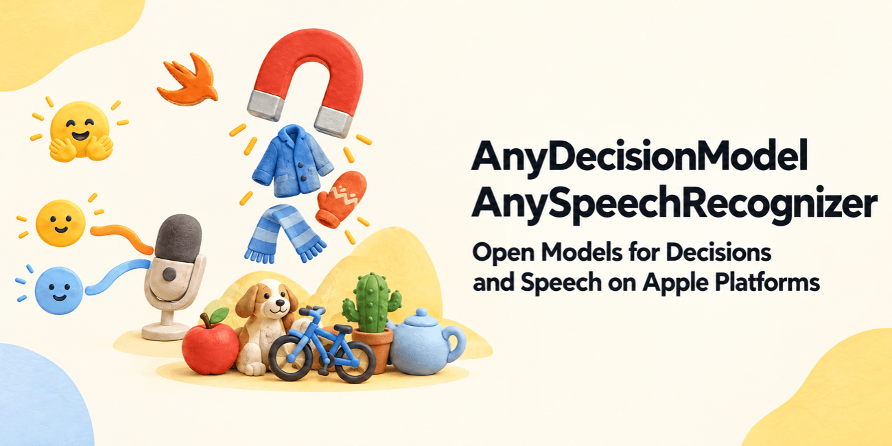
本次语音与决策工具技术文章的官方主题图；性能结论为作者自测。
新实测比较Mac语音转换模型
来源: Hugging Face · Mattt · 2026-10-29（原文仅日期） · 原文链接
Hugging Face于29日刊出作者实测，比较Apple、Parakeet和Qwen3-ASR本地实现；被测Qwen Core ML转换仓库19日已上传。当天新增的是macOS 27单机分析：Qwen较慢，更适合文件转写，未测iPhone。这是作者自报及旧模型的新分析，不能写成当日新基础模型。
Janet 锐评：
本地字幕工具的选择可以更具体：是处理一段录音，还是追着现场说话。两种任务对等待的容忍不同，单机测试的价值正在于把这层差别摊开。
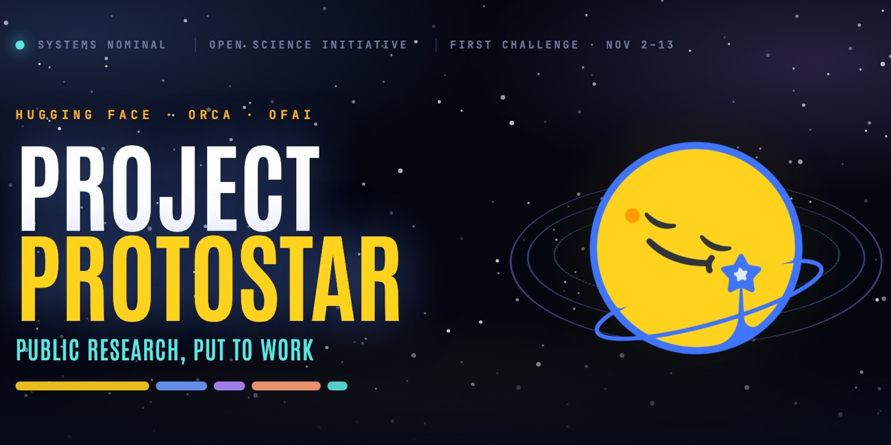
Project ProtoStar本次倡议公告配图。
ProtoStar给公共科研材料做复用入口
来源: Hugging Face / ProtoStar · 2026-10-29（原文仅日期） · 原文链接
CMU等高校、Astera、Hugging Face及ORCA发起ProtoStar，推动公共资助产生的数据、模型与代码附带可用格式、文档和来源记录。首场CMU气候挑战将于11月2日至13日举行，使用210座美国城市历史天气，比较AI预测与历史均值、线性趋势等基线；完整结果待2027年初公布。它是开放复用倡议，不是已经证明AI优于传统方法的结果。
Janet 锐评：
一份公开文件如果缺字段解释、版本和出处，别人下载以后仍得重新猜一遍。ProtoStar把复用本身当作要验证的问题，比单数上传了多少数据更有建设性。首场挑战还有一个朴素但重要的设计：让复杂方法先和历史均值、线性趋势比较；研究材料有没有帮人走得更远，终于可以落到可复查的结果上。
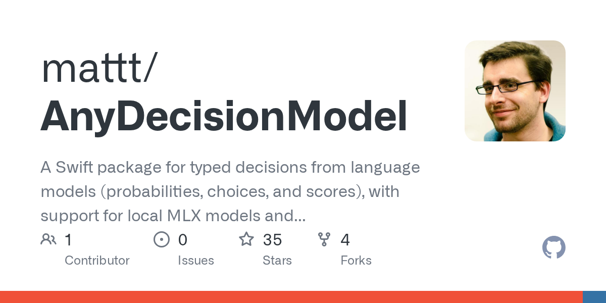
AnyDecisionModel官方项目卡片，非实际预测结果截图。
Swift决策接口返回选项概率
来源: Hugging Face · Mattt · 2026-10-29（原文仅日期） · 原文链接
同篇技术文章还介绍AnyDecisionModel，以带类型的选项和概率读取决策，接入本地或托管后端；这是前文实测的接口补充。概率集中表示模型偏好，不能直接等同于答案正确。
Janet 锐评：
分类结果能被程序稳定读取，往往比再生成一段解释更省后续处理。分流和评分各有不同代价。选项定义和实际错误率仍是判断依据。
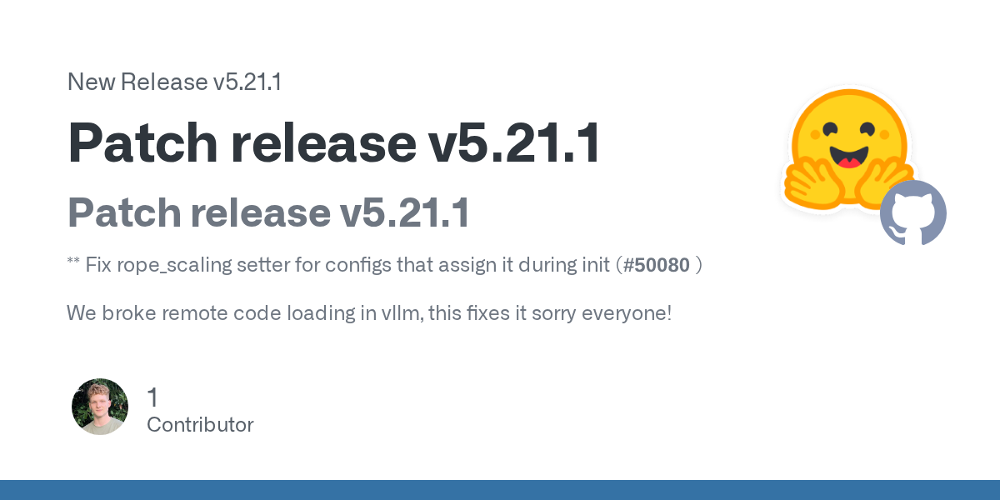
本次Transformers 5.21.1版本发布卡片。
Transformers补丁修复vLLM模型加载
来源: GitHub · Hugging Face · 2026-10-29 16:35（台北） · 原文链接
Transformers发布5.21.1补丁，修复初始化时设置rope_scaling的配置兼容问题。维护者明确表示先前变更破坏了vLLM中的远程模型实现加载，此补丁用于恢复该路径。本条针对当天这项修复，并不把软件依赖恢复写成模型能力提升；同日另有5.22.0功能版，选择时仍应对应自己的依赖组合。
Janet 锐评：
服务起不来时，问题未必在权重或显卡，也可能只是配置初始化顺序变了。把破坏兼容的入口和补丁版本写清楚，能让使用方少做几轮无关的模型排查。
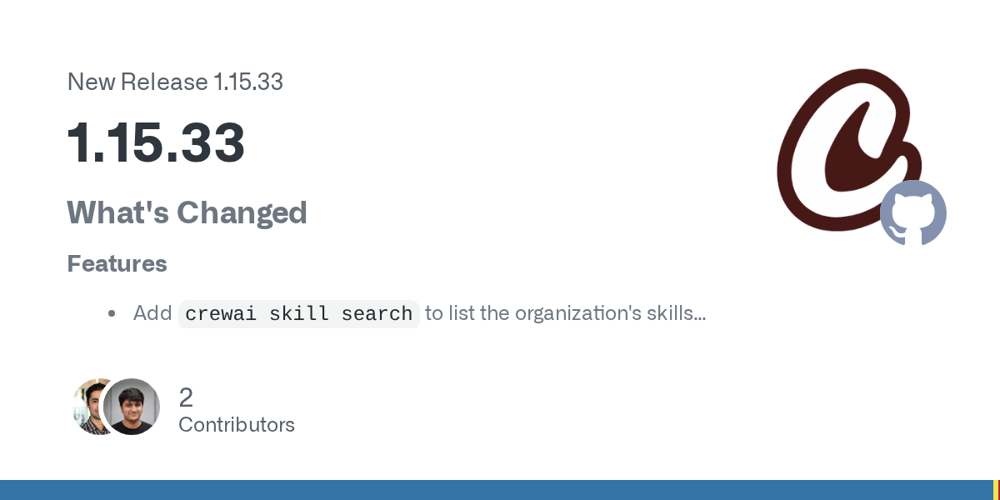
CrewAI本次1.15.33版本发布卡片。
CrewAI补记工具调用与结构化用量
来源: GitHub · CrewAI · 2026-10-29 15:36（台北） · 原文链接
CrewAI 1.15.33补充LiteLLM工具调用及结构化输出的token用量上报，并加入组织技能搜索、Python flow输入传递和zip部署来源信息。维护版也处理登录超时、检查点恢复及重定向日志等问题。发布说明没有给出这些修复为用户节省费用的统一测量，因此不把用量记录完善直接等同于账单下降。
Janet 锐评：
漏记工具调用时，一条流程看上去便宜，费用却会在平台账单里出现。记录补全首先让成本可解释，是否更划算则取决于任务还要调用几次模型、重试几轮。
今日核心预测
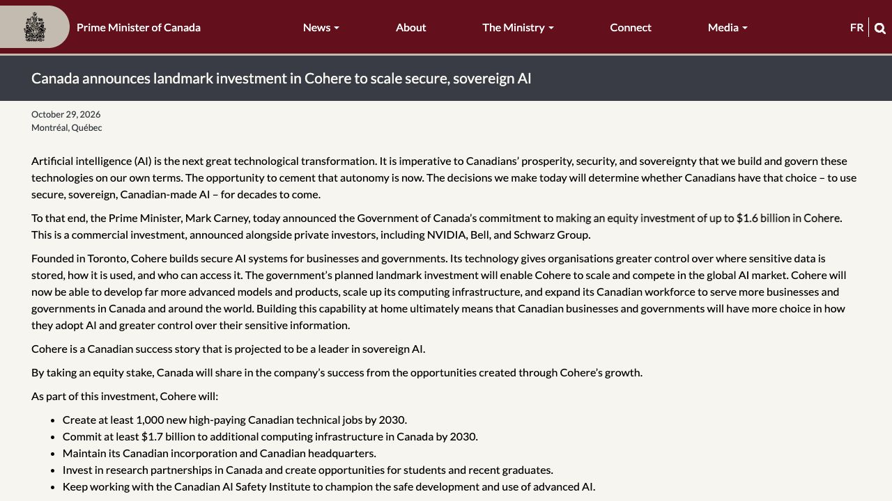
加拿大总理办公室本次投资公告原文截图，保留日期、金额及分期条件。
加拿大拟分期入股Cohere16亿加元
来源: Prime Minister of Canada / Cohere · 2026-10-29（原文仅日期） · 原文链接
加拿大政府承诺向Cohere作最多16亿加元股权投资，分期执行并定期核对承诺。Cohere须保持加拿大注册及总部，到2030年至少新增1000个加拿大技术岗位，并投入至少17亿加元新增本地计算设施。同期公司宣布E轮首轮交割、整体目标最多70亿加元；目标额、政府上限与实际已到账金额不能相互替代。
Janet 锐评：
公共资金拿到股份，意味着纳税人既可能分享收益，也承担公司扩张的风险。这里最具体的信息，是投入被拆成分期，并和岗位、总部及本地算力承诺相连。与其只盯一个融资总数，后续更有意义的是逐期看这些条件兑现了多少，以及资本如何转成可持续的研发与服务；“主权AI”的说法因此多了可以追问的项目。
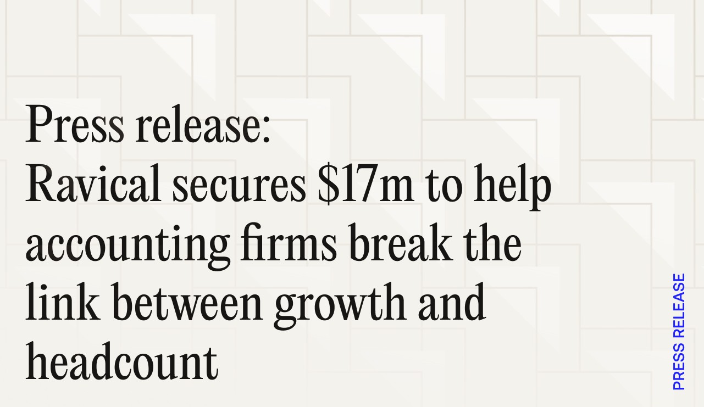
Ravical本轮融资公告的官方标题图。
Ravical融资1700万美元共享事务所经验
来源: Ravical · 2026-10-29（原文仅日期） · 原文链接
Ravical宣布1700万美元种子轮融资，由MMC Ventures领投，Lakestar、Pitchdrive及Shapers参与。公司称已有逾100家欧洲会计事务所使用，资金用于深化欧洲市场并进入美国，把机构内专业经验、客户资料和工作方式整合为共用流程。公告中的客户增长与效率案例来自公司及客户自述，不构成独立行业平均表现。
Janet 锐评：
事务所的经验如果一直只存在某个合伙人脑子里，团队扩张就很难。共用工作方式能减少重复准备，也可能放大一条错误规则；有经验的人怎样复核、怎样修订这套知识，会比人人各买一个助手更关键。
Serval本次C轮融资公告采用的团队照片。
Serval融资1.5亿美元扩企业自动化
来源: Serval · 2026-10-29（原文仅日期） · 原文链接
Serval宣布红杉领投的1.5亿美元C轮，估值30亿美元；公司称这是12个月内第三轮融资，累计融资2.77亿美元。资金将用于扩展Catalyst，把业务需求转成带权限、批准与管理控制的代码工作流，面向IT及其他部门。它试图替换既有服务管理系统；公告未披露经独立核验的收入绝对值，不能由估值推断已获得相应市场份额。
Janet 锐评：
少填一张工单是改善体验，替换整个服务管理系统则要接住多年积累的角色、例外和记录。Serval这笔钱押在后一件事上，客户愿不愿搬家，最终看的是迁移之后每天能否顺畅办完那些小事。